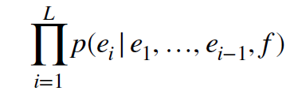
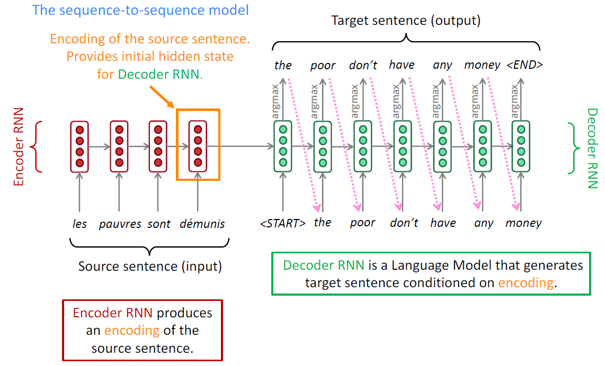
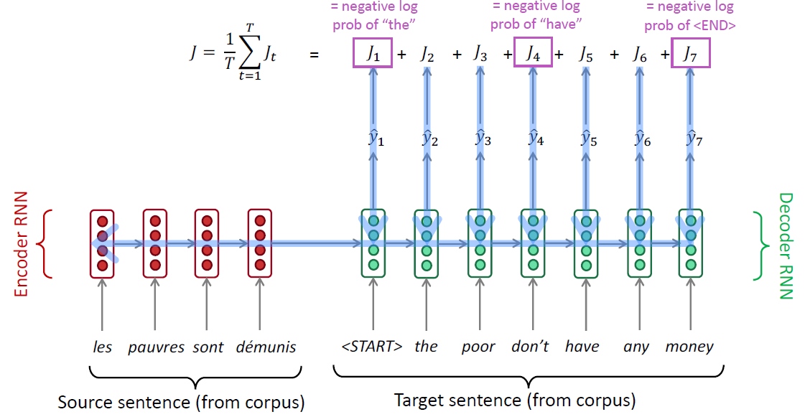
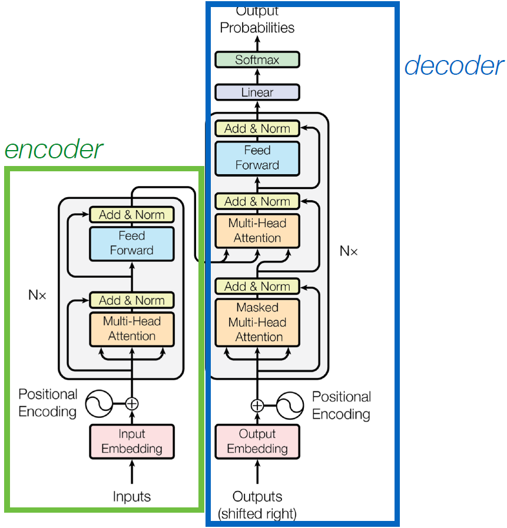

Transformer and sequence-to sequence learning
sequence-to-sequence learning
Used when inputs and outputs are both sequences of words (e.g., machine translation, summarization)
- we’ll use French (f) to English (e) as a running example
- goal: given French sentence f with tokens f1, f2, … fn produce English translation e with tokens e1, e2, … em
- real goal: compute
seq2seq models
- use two different neural networks to model
- first we have the encoder, which encodes the French sentence f
- then, we have the decoder, which produces the English sentence e4
Neural Machine Translation (NMT)

Training a Neural Machine Translation system

Transformer

- Position embeddings are added to each word embedding. Otherwise, since we have no recurrence, our model is unaware of the position of a word in the sequence!
- Residual connections, which mean that we add the input to a particular block to its output, help improve gradient flow
- A feed-forward layer on top of the attention weighted averaged value vectors allows us to add more parameters / nonlinearity
- Moving onto the decoder, which takes in English sequences that have been shifted to the right (e.g.,
schools opened their) - the decoder is responsible for predicting the English words, we need to apply masking as we saw before.
- we have cross attention, which connects the decoder to the encoder by enabling it to attend over the encoder’s final hidden states.
output embeding是ground truth的embedding结果，（teacher forcing：use ground truth as input）也就是正确答案，那存在一个问题：在testing是output embedding怎么输入，不知道正确答案？解决办法：training时，把正确结果当做decoder的输入，在testing时，把上一个时刻decoder的结果当做当前时刻的输入，但是这样在decoder的输出结果中，肯定存在错误，所以不能让decoder在训练时只看到正确结果，就需要在training时人为加入一些错误的结果。
Positional encoding